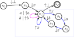

Context-free = Stack Recognizable
This lecture is going to be of a familiar nature, I think.
We are going to show that two families of languages are equal.
Given an alphabet \(A\) of input letters, recall that a language \(L \subseteq A^*\) is context-free if there is a (context-free) grammar \(\mathcal G = (X, A, R)\) with a variable \(x \in X\) such that \(\mathcal L(\mathcal G, x) = L\).
And also, that the family of context-free languages is written \(\mathsf{CFL}\).
Recall that \(L\) isstack recognizable if there is a stack automaton with finitely many states \(\mathcal S = (Q, A, \Sigma, \delta, F)\) with a state \(x\in Q\) such that \(\mathcal L(\mathcal S, x) = L\), and that the family of stack recognizable languages is written \(\mathsf{Stack}\).
What we are going to prove is the following theorem:
(CFL=Stack)
For any language \(L\), \(L\) is context-free if and only if it is stack recognizable.
That is,
\[
\mathsf{CFL} = \mathsf{Stack}
\]
The proof proceeds in the usual way one proves that two sets are equal: (1) we are going to show that \(\mathsf{CFL} \subseteq \mathsf{Stack}\) and then show that \(\mathsf{CFL} \supseteq \mathsf{Stack}\).
Every Context-free Language is a Stack Recognizable Language
Let's start by showing (1), that \(\mathsf{CFL} \subseteq \mathsf{Stack}\).
As might be expected, this is going to involve a construction that turns a grammar into a finite stack automaton.
The basic idea behind the construction can be framed as matching the obligations of a derivation.
Every rewrite rule \(y \to \mu\) is going to correspond to a new obligation that the derivation has to fill.
Note that this implies that both \(A\) and \(X\) are going to be contained in our set of stack symbols.
This rewrite rule is modelled in the stack automaton with a path that pops \(y\) from the stack and pushes the characters of \(\mu\) to the stack in reverse order (because stacks are last-in-first-out) and pop each letter as it is being read.
This captures that every derivation, say \(x_0 \Rightarrow \mu_1 \Rightarrow \cdots \Rightarrow \mu_n \Rightarrow w\), must end with a word \(w \in A^*\) (as opposed to a monomial expression \(\mu \in (X \cup A)^*\)).
Every rewrite step, say \(\mu_i \Rightarrow \mu_{i+1}\), eliminates a variable from the previous expression, but it may introduce new ones.
If a rewrite step introduces a variable to the derivation, i.e., \(\mu_{i+1}\) has a variable in it, the deriver is obliged to later remove that variable with a rewrite rule.
Formally, the construction looks like this:
(Grammar-to-Automaton)
Let \(\mathcal G = (X, A, R)\) be a context-free grammar with a variable \(x_0\).
Then the
stack automaton corresponding to \(x_0\), \(\mathcal S_{x_0} = (Q, A, \Sigma, \delta, F)\), is obtained by adding the collection of cycles, described after the following figure, starting from the state \(s_{\circlearrowleft}\), to the following state diagram:
The cycles that get added to the blue box in the figure are of the following form:
-
For each \(a \in A\), add a self-loop \(s_{\circlearrowleft} \xrightarrow{a \mid {\uparrow} a} s_{\circlearrowleft}\).
-
For each rewrite rule \(y \to b_1b_2\cdots b_{n-1}b_n\), where \(y \in X\) and \(b_i \in X \cup A\) for each \(i\), add a cycle
\[
s_{\circlearrowleft}
\xrightarrow{{\uparrow} y} s_{n+1}
\xrightarrow{{\downarrow} b_n} s_{n}
\xrightarrow{{\downarrow} b_{n-1}} s_{n-1}
\xrightarrow{{\downarrow} b_{n-2}} \cdots
\xrightarrow{{\downarrow} b_{2}} s_2
\xrightarrow{{\downarrow} b_{1}} s_{{\circlearrowleft}}
\]
It is important to note that in this construction, other than sharing \(s_{\circlearrowleft}\), these cycles are pair-wise distinct.
(Correctness of Grammar-to-Automaton)
Let \(\mathcal G = (X, A, R)\) be a context-free grammar with a variable \(x_0\).
Let \(\mathcal S_{x_0}\) be the stack automaton obtained from the Grammat-to-Automaton construction, in particular with the state \(s_0\).
Then
\[
\mathcal L(\mathcal S_{x_0}, s_0) = \mathcal L(\mathcal G, x_0)
\]
Note the extra symbol \(\bot\), called "bottom".
The role it plays in the structure of the automaton is going to be a running theme in later types of automata: it is really just there to delineate between two different parts of the program.
In this case, it delineates between states in which the stack can be empty and states where it cannot.
(As vs Bs Again)
Recall the grammar \(\mathcal G = (\{x\}, \{a,b\}, \{(x, \varepsilon), (x, axb)\})\), also depicted below:
\[
x \to \varepsilon \mid axb
\]
Using the Grammar-to-Automaton construction, we obtain the following stack automaton \(\mathcal S_x = (Q, A, \{\bot\}\cup X \cup A, \delta, F)\):

To see how the string \(aabb \in \mathcal L(\mathcal G, x)\) is accepted by this stack automaton, consider the path
\[\begin{aligned}
s_0
&\xrightarrow{{\downarrow}\bot} s_1
\xrightarrow{{\downarrow}x} s_{\circlearrowleft}
\xrightarrow{{\uparrow}x} s_4
\xrightarrow{{\downarrow}b} s_3
\xrightarrow{{\downarrow}x} s_2 \\
&\hspace{2em}\xrightarrow{{\downarrow}a} s_{\circlearrowleft}
\xrightarrow{a \mid {\uparrow}a} s_{\circlearrowleft}
\xrightarrow{{\uparrow}x} s_4
\xrightarrow{{\downarrow}b} s_3
\xrightarrow{{\downarrow}x} s_2 \\
&\hspace{4em}\xrightarrow{{\downarrow}a} s_{\circlearrowleft}
\xrightarrow{a \mid {\uparrow}a} s_{\circlearrowleft}
\xrightarrow{{\uparrow}x} s_{\circlearrowleft}
\xrightarrow{b \mid {\uparrow}b} s_{\circlearrowleft}
\xrightarrow{b \mid {\uparrow}b} s_{\circlearrowleft}
\xrightarrow{{\uparrow}\bot} s_\checkmark
\end{aligned}\]
This is a path that reads \(aabb\), so it is a candidate for a successful run of \(aabb\) starting from \(s_0\).
To see that it is a successful run, we need to check that its program starts and ends with an empty stack and doesn't crash, i.e., that it reduces to \(\mathtt{skip}\).
Here's the calculation, with brackets around push-pop pairs that are eliminated on the next line:
\[\begin{aligned}
&{\downarrow}\bot
{\color{blue}({\downarrow}x
{\uparrow}x)}
{\downarrow}b
{\downarrow}x
{\downarrow}a
{\uparrow}a
{\uparrow}x
{\downarrow}b
{\downarrow}x
{\downarrow}a
{\uparrow}a
{\uparrow}x
{\uparrow}b
{\uparrow}b
{\uparrow}\bot
\\
&= {\downarrow}\bot
{\downarrow}b
{\downarrow}x
{\color{blue}({\downarrow}a
{\uparrow}a)}
{\uparrow}x
{\downarrow}b
{\downarrow}x
{\downarrow}a
{\uparrow}a
{\uparrow}x
{\uparrow}b
{\uparrow}b
{\uparrow}\bot \\
&= {\downarrow}\bot
{\downarrow}b
{\downarrow}x
{\uparrow}x
{\downarrow}b
{\downarrow}x
{\color{blue}({\downarrow}a
{\uparrow}a)}
{\uparrow}x
{\uparrow}b
{\uparrow}b
{\uparrow}\bot \\
&= {\downarrow}\bot
{\downarrow}b
{\color{blue}({\downarrow}x
{\uparrow}x)}
{\downarrow}b
{\downarrow}x
{\uparrow}x
{\uparrow}b
{\uparrow}b
{\uparrow}\bot \\
&= {\downarrow}\bot
{\downarrow}b
{\downarrow}b
{\color{blue}({\downarrow}x
{\uparrow}x)}
{\uparrow}b
{\uparrow}b
{\uparrow}\bot \\
&= {\downarrow}\bot
{\downarrow}b
{\color{blue}({\downarrow}b
{\uparrow}b)}
{\uparrow}b
{\uparrow}\bot \\
&= {\downarrow}\bot
{\color{blue}({\downarrow}b
{\uparrow}b)}
{\uparrow}\bot \\
&= {\color{blue}({\downarrow}\bot
{\uparrow}\bot)} \\
&= \mathtt{skip}
\end{aligned}\]
A lot of work for \(aabb\), but at least we know it's correct!
(Less-Involved)
Consider the stack automaton in the As vs Bs Again example again.
Show that \(s_0\) accepts the word \(ab\) by writing down the accepting run that reads \(ab\) starting from \(s_0\) and reducing the stack program in the run to \(\mathtt{skip}\).
(Full-Stack)
For each of the words \(w_i\) and grammars \(\mathcal G_i\) below, calculate the stack automaton corresponding to the variable \(x\) and show that the stack automaton's \(s_0\) accepts \(w_i\).
- The word is \(w_1 = abc\), and the grammar
\[\mathcal G_1 =
\begin{aligned}
x &\to axy \mid \varepsilon \\
y &\to byc \mid \varepsilon
\end{aligned}
\]
- The word is \(w_2 = 0110\), and the grammar
\[\mathcal G_2 =
\begin{aligned}
x &\to 0x1 \mid 1 x 0 \mid \varepsilon
\end{aligned}
\]
(Algorithmic Balancing)
Let \(L\) be the set of balanced strings of brackets from
Balancing Act.
In that problem, you designed a grammar with a variable that derives \(L\).
-
Use the Grammar-to-Automaton construction to design a stack automaton with a state that accepts \(L\).
-
Can you think of a smaller stack automaton with a state that accepts \(L\).
Every Stack Recognizable Language is a Context-free Language
Now let's show that \(\mathsf{Stack} \subseteq \mathsf{CFL}\).
This is going to involve a construction that turns a stack automaton into a grammar.
In fact, as we will see, a stack automaton is kind of already itself a compact representation of a grammar.
But be warned, the word "compact" here is an understatement: the grammar corresponding to a stack automaton can be extremely large compared to the original automaton (although still finite).
In particular, if the stack automaton has \(n\) states, the grammar corresponding to it has \(n^2\) variables (although a smaller grammar may be possible) and \(O(n^3)\) many rules.
(Automaton-to-Grammar)
Let \(\mathcal S = (Q, A, \Sigma, \delta, F)\) be a stack automaton.
Then the
grammar corresponding to \(\mathcal S\) is the grammar \(\mathcal G = (X, A, R)\) consisting of the following data:
-
The variables are \(X = \{v_{xy} \mid x,y \in Q\}\).
(The variable \(v_{xy}\) is just a formal name for the pair \((x,y)\).)
-
The rules \(R\) of the grammar are of three types:
-
For every pair of identical states, we have the rewrite rule
\[
v_{xx} \to \varepsilon
\]
that lets you eliminate it.
-
For every triple of states, \(x,y,z \in Q\), we have the rewrite rule
\[
v_{xz} \to v_{xy}v_{yz}
\]
that lets you split the variable into "intermediate paths".
-
For every pair of transitions \(x \xrightarrow{a \mid p} u\) and \(y \xrightarrow{b \mid q} z\) in \(\mathcal S\) such that \(pq = \mathtt{skip}\), we have the rewrite rule
\[
v_{xy} \to av_{uz}b
\]
This might seem a bit opaque at first, so let's start with the idea behind this construction.
The main idea behind the construction is that for any states \(x,y \in Q\), if \(y \in F\), i.e., \(y\) is an accepting state of \(\mathcal S\), then
\[
\mathcal L(\mathcal S, x) = \mathcal L(\mathcal G, v_{xy})
\]
Technically, this will require some conditions on \(\mathcal S\) to get working, but for now let's stick to understanding the idea.
Every accepting run of the automaton, now, should match a left-most derivation starting with the variable \(v_{xy}\).
Let's start from the state \(x \in Q\) and look at such a run of the automaton:
\[
x \xrightarrow{a_1 \mid p_1} x_1 \xrightarrow{a_2 \mid p_2} \cdots \xrightarrow{a_{n-1} \mid p_n} x_{n-1} \xrightarrow{a_n \mid p_n} y
\]
We would like to somehow turn this into a derivation in our grammar.
The tactic this construction takes is to reduce our derivation to one of several types of shorter derivations (think about how mathematical induction works):
-
In the simplest case, \(n = 0\) and \(y = x\).
There are no shorter derivations, so this is a kind of "base case" for our reduction to shorter derivations.
This situation suggests we include the rewrite rule
\[
v_{xx} \to \varepsilon
\]
-
In the second case,
if the stack is empty at some intermediate step in the run, i.e., \(p_1\cdots p_i = \mathtt{skip}\) for some \(i < n\), then we would like to reduce our current derivation to two shorter derivations that we concatenate afterward: one for the first half of the run and one for the second, as in
\[
\overbrace{x
\xrightarrow{a_1 \mid p_1} \cdots
\xrightarrow{a_{i} \mid p_i}}^{v_{xx_i}}~ x_{i} ~
\overbrace{\xrightarrow{a_{i+1} \mid p_{i+1}} \cdots
\xrightarrow{a_n \mid p_n} y}^{v_{x_iy}}
\]
This suggests the rewrite rule
\[
v_{xy} \to v_{xx_i} v_{x_iy}
\]
-
In the final case, the stack is only empty at the beginning and the end, never empty in-between (formally, this means that \(p_1\cdots p_i = \mathtt{skip}\) only if \(i = n\)).
In this case, we would like it to be true that \(p_1p_n = \mathtt{skip}\) because \(p_n\) is the only stack program that has the opportunity to undo \(p_1\).
In this case, we would also like it to be true that \(p_2 \cdots p_{n-1} = \mathtt{skip}\).
In such a case, we could add a derivation rule of the form
\[
v_{xy} \to a_1 v_{x_1 x_{n-1}} a_n
\]
and reduce our derivation to one that starts with the variable \(v_{x_1 x_{n-1}}\).
This tells us what we need to get this tactic to work.
We need the following statement to be true:
(Statement 1)
If \(p_1\cdots p_i = \mathtt{skip}\) only if \(i = n\), then
- \(p_1 p_n = \mathtt{skip}\)
- \(p_2 \cdots p_i = \mathtt{skip}\) only if \(i = n-1\)
Unfortunately, Statement 1 is not always true!
(One of these is not like the other)
Find stack programs \(p_1,p_2,p_3 \in \mathtt{Stk}\) such that the following statements are all simultaneously true:
- \(p_1p_2p_3 = \mathtt{skip}\)
- \(p_1 \neq \mathtt{skip}\) and \(p_1p_2 \neq \mathtt{skip}\)
- \(p_1p_3 \neq \mathtt{skip}\)
What do we need to assume about the stack programs \(p_1,\dots,p_n\) to ensure that Statement 1 holds?
So, if we think of pushing a symbol to the stack as creating an obligation for ourselves down the line, then this should match introducing variables into the
Consequences of CFL=Stack
Knowing that context-free languages are the same as stack recognizable languages opens up our study of context-free languages by allowing us to use automata-theoretic tools to study them.
In particular, we can make use of constructions like the product construction from earlier, although it's not as simply applied as before.
(Intersecting with a Regular Language)
The intersection of a regular language and a context-free language is context-free.
(Sketch!)
Fix an alphabet \(A\).
Let \(L_1 \subseteq A^*\) be a context-free language and \(L_2 \subseteq A^*\) be a regular language.
By the CFL=Stack and Kleene theorems, there is a stack automaton \(\mathcal S = (Q_1, A, \Sigma, \delta_1, F_1)\) with a state \(x_0 \in Q_1\) such that \(\mathcal L(\mathcal S, x_0) = L_1\), as well as a finite automaton \(\mathcal A = (Q_2, A, \delta_2, F_2)\) with \(y_0 \in Q_2\) such that \(\mathcal L(\mathcal A, y_0) = L_2\).
We use a variation on the product construction to produce a stack automaton \(\mathcal S \otimes \mathcal A\) with a state \(z\) such that \(\mathcal L(\mathcal S \otimes \mathcal A, z) = L_1 \cap L_2\).
Here is the construction of \(\mathcal S \otimes \mathcal A\): the states of the automaton are
\[
Q_1 \times Q_2 = \{(x, y) \mid x \in Q_1 \text{ and } y \in Q_2\}
\]
The alphabet is \(A\) and the stack symbols are \(\Sigma\).
The transition relation is given by the following rule: we have
\[
(x, y) \xrightarrow{a \mid p} (x', y')
\]
if and only if
\[
x \xrightarrow{a \mid p} x'
\text{ and }
y \xrightarrow{a} y'
\]
The final states are
\[
F = \{(x, y) \mid x \in F_1 \text{ and } y \in F_2\}
\]
The following claim finishes the proof.
Claim. Let \(\mathcal S \otimes \mathcal A\) be constructed as above.
Then \(\mathcal L(\mathcal S \otimes \mathcal A, (x_0, y_0)) = L_1 \cap L_2\).
(Closure Properties)
Show that \(\mathsf{CFL}\) is closed under unions in two ways:
- Directly show that the union of two context-free languages \(L_1,L_2 \in \mathsf{CFL}\) is context free by constructing a grammar \(\mathcal G\) with a variable that derives their union, \(L_1 \cup L_2\).
- Use epsilon transitions to show that the union of two languages in \(\mathsf{Stack}\) is also in \(\mathsf{Stack}\). Then refer to the CFL=Stack theorem.
 The stack automaton \(\mathcal S_{x_0} = (Q, A, \Sigma, \delta, F)\).
Here,
\[\begin{aligned}
Q &= \{s_0, s_1, s_{\circlearrowleft}, s_\checkmark\} \cup (\text{more states added below}) \\
\Sigma &= \{\bot\} \cup X \cup A \\
\delta &= \{ \\
&\hspace{2em} (s_0, (\varepsilon, \mathtt{push}~\bot), s_1), \\
&\hspace{2em} (s_1, (\varepsilon, \mathtt{push}~x_0), s_{\circlearrowleft}), \\
&\hspace{2em} (s_\circlearrowleft, (\varepsilon, \mathtt{pop}~\bot), s_{\checkmark}) \\
&\hspace{1em} \} \cup (\text{more transitions added below}) \\
F &= \{s_\checkmark\}
\end{aligned}\]
The stack automaton \(\mathcal S_{x_0} = (Q, A, \Sigma, \delta, F)\).
Here,
\[\begin{aligned}
Q &= \{s_0, s_1, s_{\circlearrowleft}, s_\checkmark\} \cup (\text{more states added below}) \\
\Sigma &= \{\bot\} \cup X \cup A \\
\delta &= \{ \\
&\hspace{2em} (s_0, (\varepsilon, \mathtt{push}~\bot), s_1), \\
&\hspace{2em} (s_1, (\varepsilon, \mathtt{push}~x_0), s_{\circlearrowleft}), \\
&\hspace{2em} (s_\circlearrowleft, (\varepsilon, \mathtt{pop}~\bot), s_{\checkmark}) \\
&\hspace{1em} \} \cup (\text{more transitions added below}) \\
F &= \{s_\checkmark\}
\end{aligned}\]